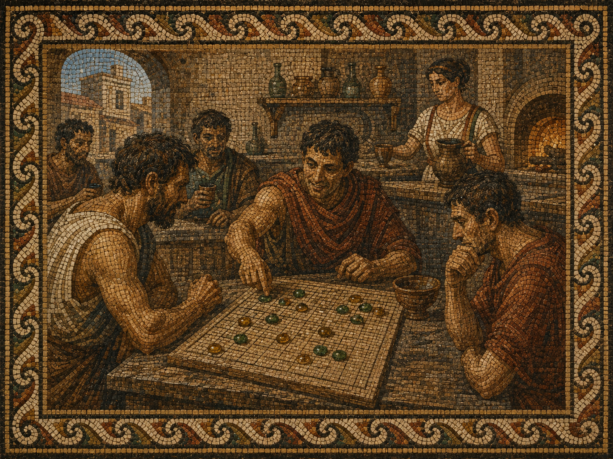
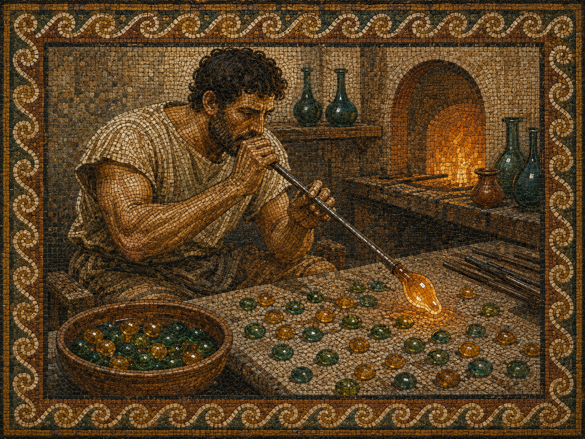
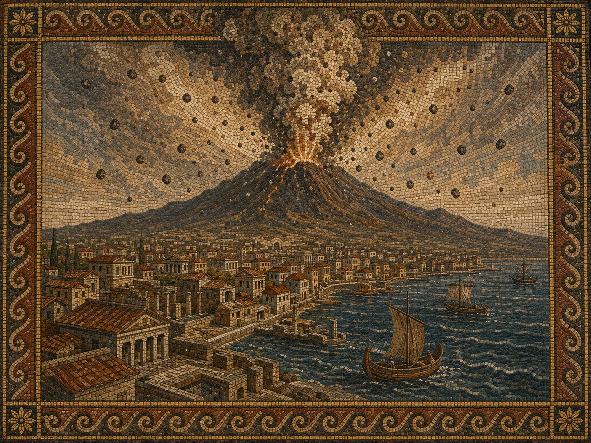
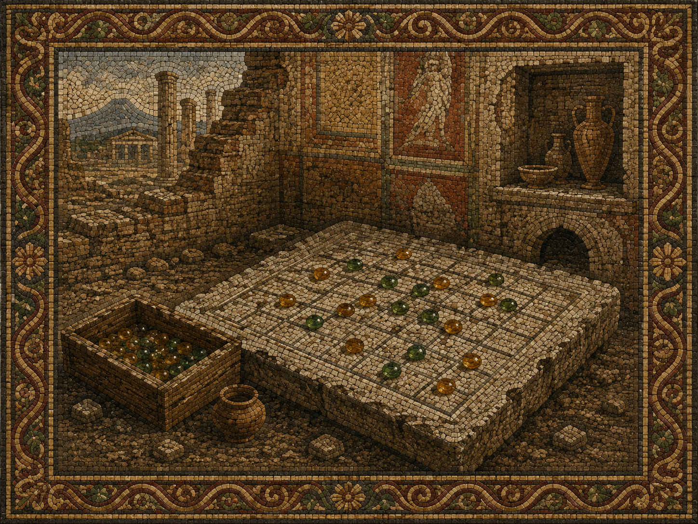

In the summer of 79 AD, the mountain above Pompeii was alive.
Not with fire — not yet — but with the low, restless tremors that the locals had grown so accustomed to that they no longer remarked on them. Vesuvius had shaken the region for years. It had cracked amphora, shifted doorframes, and sent wine sloshing from unattended cups. The citizens of Pompeii had learned to pour a little less and worry a little less, and life continued in the comfortable, unhurried rhythm of a prosperous Roman port city in high summer.
On the Via dell'Abbondanza, the main artery of the city, there was a thermopolium — a street-side tavern — run by a woman named Asellina, whose name is still scratched into the election notices on the wall outside. Her establishment was a favourite of soldiers, merchants, and the young men who did not yet need to be merchants. The counter was volcanic basalt, worn smooth by decades of elbows. The food was kept warm in terracotta vessels sunk into the stone. And at the back, where the light came in sideways through a narrow window, there was a gaming table.
It was here, in the months before the eruption, that a game was played which the men who played it simply called lapilli — little stones.

Mosaic depiction · Asellina's thermopolium, Via dell'Abbondanza
The pieces were not carved or purchased. That is what made them remarkable.
Three doors down from Asellina's thermopolium, a glassblower named Eros kept his furnace burning from before sunrise until well after dark. Each morning he swept his workshop floor and found them waiting: small rounded drops of glass that had fallen from the rod overnight and cooled where they landed — perfect little domes, smooth on the bottom, slightly convex on top, fitting cleanly between thumb and forefinger. Most were discarded. Some he melted back down. But the ones in the two colours his furnace most often produced — a deep sea-green from the copper in his sand, and a warm amber-yellow from the iron and sulfur that clung to everything near the mountain — those he swept into a clay pot by the door.
Someone from Asellina's had started collecting them. No one remembered exactly when or who. What they remembered was that the drops were the right size, the right weight, and that when you set them on a scratched grid of nineteen lines, they sat still and caught the light.

Mosaic depiction · Eros at the furnace, his glass drops cooling on the floor
The game that emerged from those glass drops was not Terni Lapilli, the old tic-tac-toe that children scratched on stepping stones. It was something deeper and more violent: a game of five, of encirclement, of the same custodial destruction that Roman legions practised on the field.
The object was to place five of your stones in a row — but the board did not stay still. A pair of your opponent's stones, caught between two of your own, was captured and removed. Flanked, and gone. The Romans had a word for this: intercipere — to seize in between. It was how they dealt with enemies. It was, the soldiers felt, entirely natural.
"A position that looked winning could be collapsed in two moves by a well-placed capture. A player who had given up five stones was not losing — he might be baiting a trap."
A man named Marcus Decimus Vitalis — a veteran of the Legio II Adiutrix, passing through Pompeii on his way to retirement in Puteoli — is said to have taught the full rules to Asellina's regulars sometime in the spring of that year. He had learned the game at a garrison in Dacia, he told them, from a Greek-speaking merchant who claimed it was older than Rome. Whether this was true no one could verify.
By August, the game had its own vocabulary in Asellina's back room. A line of three open stones was a tria, a threat. A line of four was a tessera — a tile, a piece, a word that meant something nearly complete. And the winning line of five was, of course, the lapilli itself: five small stones in a row, simple as the mountain above, and just as inevitable once the sequence had begun. The mountain rumbled outside, and the men inside did not look up.
· · ·
On the morning of August 24th, the mountain answered.
The eruption came in two phases. The first was lapilli — the real ones, the volcanic kind, pumice the size of a fist raining from a column of ash that rose eighteen miles into the sky. They fell for hours, filling the streets, collapsing roofs, burying the city under six metres of stone before the pyroclastic surge came at dawn and ended everything still living.

Mosaic depiction · The eruption of Vesuvius · August 24th, 79 AD
When archaeologists excavated the thermopolium centuries later, they found the counter intact, the food still in the vessels, the election notices still on the wall. They found dice. They found coins. In the back room, beneath a layer of compacted pumice, they found a rectangular stone table with a nineteen-by-nineteen grid scratched into its surface, and beside it, in what had once been a wooden box, a collection of small glass drops — green and amber, smooth on their flat bases, domed on top, sorted into two groups, worn with the particular polish that only comes from being picked up and set down thousands of times.
No one had played them since that August morning. They had been waiting in the dark for two thousand years.

Mosaic depiction · The board, as found · Pompeii excavations
The game that buried them had also preserved them.
That is the paradox of Pompeii, and the paradox of lapilli — the small stones that gave the game its name, and the small stones that fell from the sky and froze it in time. What the volcano destroyed, it also kept. What it ended, it made permanent.
We cannot know Marcus Decimus Vitalis. We cannot know if he made it to Puteoli. We cannot know who was winning when the mountain roared and the pieces scattered.
But we know the game. We know its shape and its logic and the particular pleasure of watching a pair of your opponent's stones vanish from the board. We know the three-in-a-row threat and the four-in-a-row inevitability and the five-in-a-row that ends everything.
The Romans knew it too. They played it with drops of glass from the furnace down the street, green and amber against a scratched grid, while the mountain that would bury them rumbled quietly outside.
We play it still.
The true history
That is the legend — fiction, and offered as nothing else. The real history is just as good a story. The game the modern world knows as Pente® was created by Gary Gabrel in Stillwater, Oklahoma, in 1977, on these same nineteen lines with these same two roads to victory. Its first world champions, Rollie Tesh and Tom Braunlich, became its first serious theorists — Tesh's Keryo variant and the tournament rule from Braunlich's era are both in this app, under their proper names. Pente is a registered trademark of Hasbro, Inc., with which we are not affiliated; that is why the game here wears a name and a legend of its own. Everything the app teaches applies unchanged at any Pente table, cardboard or glass — and the companion book's history chapter traces the whole lineage, from Edo-period Japan to a pizza restaurant in Oklahoma, with sources.
· · ·
How to Play Lapilli Stones
The rules of the ancient game, as played today
The Board
Lapilli Stones is played on a 19×19 grid of intersections. Stones are placed on the intersections — not the squares — in the manner of Go. The board begins entirely empty.
Two Ways to Win
Five
In a row. Place five or more of your stones in an unbroken line — horizontally, vertically, or diagonally.
Five
Captured pairs. Seize ten of your opponent's stones — pair by pair — until they can no longer defend.
Opening Move
The first player opens on the center intersection. Under tournament rules (recommended), the first player's second stone must be placed at least three intersections away from center — this limits the first-player advantage and keeps the game balanced.
Captures
This is what sets Lapilli Stones apart from all other five-in-a-row games. When exactly two of your opponent's stones sit adjacent to each other, they can be seized by flanking them on both ends with your own stones in a straight line — the Roman intercipere.
⬤ ○ ○ ▢ → place your stone → ⬤ ○ ○ ⬤ → ⬤ ▢ ▢ ⬤
Captures work horizontally, vertically, and diagonally. Multiple pairs can be captured in a single move. Importantly: you may safely place a stone between two enemy stones — a pair is captured only when the opponent flanks it, not when you complete it yourself.
The Language of the Game
Tria
Three unblocked stones in a row — a live threat that demands a response.
Tessera
Four unblocked stones in a row — nearly always a forced win on the next move.
Lapilli
Five stones in a row. The game ends. The mountain has spoken.
Intercipere
To seize in between — a capture. Two of your opponent's stones, flanked and removed.
Strategy
The central tension of Lapilli Stones is between building lines and preventing captures. A row of five wins the game — but formations that are vulnerable to flanking can be dismantled in a single move. The strongest players maintain initiative: creating threats faster than the opponent can respond, forcing them to defend while your own positions compound.
Avoid adjacent pairs early — they are the only formations susceptible to capture. Build instead with stretch twos (stones with a gap between them), which threaten to extend into a tria without exposing themselves to immediate seizure. When you form an unblocked four, announce it: tessera. It is considered good form to give your opponent the chance to stop what is coming.
Variants
Keryo-Lapilli: Captures extend to triplets as well as pairs. The capture-victory threshold rises to fifteen stones. Proposed by champion Rollie Tesh in 1983 to reward more aggressive and tactical play.
Tournament (Pro) Rules: The first player's second stone must be placed outside the inner 5×5 zone. Reduces the first-player advantage at high levels of play.
The Game, In Your Hands
Everything in one purchase — no ads, no subscriptions, no tracking
Three Ways to Play
Face a friend on the same board, challenge the computer across four opponents, or play "by mail" over Game Center — moves travel across the world while each player takes their turn in their own time. Keep as many games going at once as you have friends.
Three Rule Variants
Classic Lapilli, Keryo-Lapilli with its triplet captures, and Tournament rules that temper the first-player advantage. All included; switch freely.
A Worthy Opponent
Four opponents, named like a guild: Novice, Apprentice, Journeyman, Artisan. Each rung genuinely beats the one below it, from a forgiving teacher to a craftsman that thinks four full seconds on every move. A hint button lends you its eyes when you need them. Meet the four →
Made by Hand
A carved, painted wooden board and forty individually crafted glass stones — no two games ever look alike. Every sound is synthesized from scratch: lyre strings, wind through poplars, birdsong.
Learn in Minutes
An interactive tutorial walks through every rule, variant, and online feature — from your first stone to your first capture.
Yours, Everywhere
One purchase covers Mac, iPad, and iPhone. Solo play works entirely offline, and your game is always saved exactly where you left it.